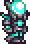

| Melee | Melee is a good starter class for those who have just started playing the game. There are many subclasses and tools centered towards this class, most of wich focus on high defence and high attack. |
|---|---|
| Ranger |  Ranger is good for those who need practice being less agressive or those with a good aim. You have many tools and items that help you stay far away but deal a hefty amount of damage. |
| Mage |  Mage is good for stretegists who understand how the game is played. Many of your spells will deal lots of damage, but have a unique gimmick to spice up your run. |
| Summoner | Summoner is typically seen as the hardest to utilize. The first tool you can aquire may take a bit of time, challenging your patience and fortitude. Don't let this sway you away, as this can become one of the more powerful classes in a playthrough. |
Welcome to...